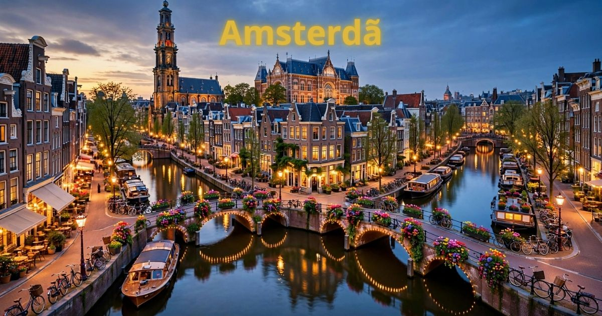

Amsterdã 2026: guia completo para viajar para a capital dos Países Baixos
Introdução: a cidade dos canais e das bicicletas
Amsterdã é, sem dúvida, uma das cidades mais charmosas e encantadoras da Europa. Capital dos Países Baixos (Holanda), a cidade é famosa por seus canais pitorescos, suas casas estreitas e inclinadas, sua rica história, seus museus de classe mundial e sua atmosfera liberal e acolhedora. Seja para explorar os canais de barco, visitar o Museu Van Gogh, conhecer a Casa de Anne Frank ou simplesmente andar de bicicleta pelas ruas charmosas, Amsterdã oferece experiências inesquecíveis para todos os perfis de viajantes.
Em 2026, Amsterdã continua sendo um dos destinos preferidos dos viajantes brasileiros. A cidade se prepara para receber turistas do mundo inteiro com uma infraestrutura cada vez mais moderna, mantendo seu charme histórico e sua essência única. Com a crescente preocupação com o turismo sustentável, a cidade tem investido em iniciativas para tornar a experiência do visitante mais consciente e responsável.
Neste guia completo sobre Amsterdã, você vai encontrar tudo o que precisa saber para planejar sua viagem: a melhor época para visitar, as atrações imperdíveis, os melhores bairros para se hospedar, como se locomover pela cidade, dicas de gastronomia, compras e muito mais.
Nosso objetivo é que você chegue a Amsterdã preparado para aproveitar ao máximo cada minuto nessa cidade fascinante. Afinal, Amsterdã é mais do que um destino — é uma experiência que combina história, arte, cultura e natureza em um só lugar.

Os charmosos canais de Amsterdã, com suas casas estreitas e inclinadas
Melhor época para visitar Amsterdã
Amsterdã tem um clima temperado, com verões amenos e invernos frios. A escolha da melhor época depende do que você busca na viagem.
Primavera (março a maio) — Uma das melhores épocas para visitar Amsterdã. As temperaturas começam a subir (entre 8°C e 18°C), as flores desabrocham nos jardins da cidade e os dias ficam mais longos. É a famosa temporada das tulipas, com os campos de flores coloridos nos arredores da cidade. Os preços dos hotéis começam a subir com a chegada da alta temporada. Não perca o Keukenhof, o jardim de tulipas mais famoso do mundo.
Verão (junho a agosto) — Época mais quente do ano, com temperaturas entre 15°C e 25°C. A cidade fica cheia de turistas, os preços são mais altos e as filas nas atrações são longas. No entanto, o verão oferece uma programação intensa de eventos, festivais ao ar livre, noites longas e a oportunidade de aproveitar os terraços e os canais. É a época mais animada da cidade.
Outono (setembro a novembro) — Muitos consideram o outono a melhor estação para visitar Amsterdã. As temperaturas são agradáveis (entre 10°C e 18°C), as folhas das árvores se transformam em um espetáculo de cores douradas, e a cidade oferece uma atmosfera charmosa e romântica. A alta temporada começa a diminuir após setembro, com preços mais acessíveis.
Inverno (dezembro a fevereiro) — O inverno em Amsterdã é frio, com temperaturas entre 0°C e 8°C. A cidade se enche de luzes de Natal e decorações especiais, com mercados de Natal charmosos. É uma época mais tranquila, com menos turistas e preços mais baixos. Para quem não gosta de frio, não é a melhor opção.
Dica: Se você quer ver as tulipas em flor, planeje sua viagem entre abril e maio. Para evitar as multidões e aproveitar o clima agradável, o outono (setembro e outubro) é a melhor escolha.
O que fazer em Amsterdã: atrações imperdíveis
Amsterdã tem uma lista quase infinita de atrações. Separamos as imperdíveis para que você não perca nada:
Museu Van Gogh — O museu mais famoso de Amsterdã, dedicado ao artista holandês Vincent van Gogh. O museu abriga a maior coleção de obras de Van Gogh do mundo, incluindo os famosos "Girassóis" e "Quarto em Arles". A visita é uma experiência emocionante para os amantes da arte. Reserve ingressos com antecedência!
Casa de Anne Frank — O museu mais comovente de Amsterdã, localizado no esconderijo onde Anne Frank e sua família se refugiaram durante a Segunda Guerra Mundial. A visita ao anexo secreto é uma experiência emocionante e educativa. Os ingressos devem ser reservados com semanas de antecedência.
Passeio de barco pelos canais — A melhor maneira de explorar Amsterdã é pelos canais. Faça um passeio de barco pelos canais históricos, passando por pontes charmosas, casas típicas e monumentos. Os passeios noturnos são especialmente bonitos, com os canais iluminados.
Rijksmuseum — O museu nacional dos Países Baixos, com um acervo que inclui obras de Rembrandt, Vermeer e outros mestres holandeses. A obra mais famosa é "A Ronda Noturna", de Rembrandt. O museu também tem uma bela biblioteca histórica e um jardim.
Vondelpark — O parque mais famoso de Amsterdã, ideal para caminhadas, piqueniques, ciclismo e relaxamento. O parque tem lagos, jardins, um palco ao ar livre e cafés. É o lugar perfeito para um passeio tranquilo em um dia ensolarado.
Bairro da Luz Vermelha (Red Light District) — O bairro mais famoso e controverso de Amsterdã. Conhecido por suas vitrines e sua atmosfera única, o bairro também tem canais charmosos, lojas e restaurantes. A visita é uma experiência cultural e histórica, que revela a história da cidade.
Mercado de Flores (Bloemenmarkt) — O mercado de flores flutuante mais famoso do mundo. Localizado em barcaças no canal Singel, o mercado vende flores, bulbos, plantas e souvenirs. É o lugar perfeito para comprar bulbos de tulipas.
Bairro dos Museus (Museumplein) — A praça que abriga os principais museus de Amsterdã: Rijksmuseum, Museu Van Gogh e Museu Stedelijk. A praça tem um grande gramado, perfeito para relaxar após a visita aos museus.
Zaanse Schans — Uma vila histórica nos arredores de Amsterdã, com moinhos de vento, casas típicas holandesas, oficinas de queijo e tamancos. É uma experiência autêntica da Holanda rural, a apenas 15 minutos de trem da cidade.
Onde ficar em Amsterdã: melhores bairros
Escolher onde se hospedar é uma das decisões mais importantes da viagem. Cada bairro de Amsterdã tem sua personalidade:
Centro (Dam Square, Red Light District) — O coração histórico de Amsterdã, com fácil acesso a todas as principais atrações. Ficar aqui significa estar no centro de tudo. Os preços são elevados, mas a localização é imbatível.
Canais (Grachtengordel) — A área dos canais históricos, com ruas charmosas, lojas elegantes e restaurantes refinados. Ficar aqui significa estar na parte mais bonita e romântica da cidade. Os preços são elevados.
Jordaan — O bairro mais charmoso e autêntico de Amsterdã, com ruas estreitas, lojas independentes, galerias de arte, cafés acolhedores e mercados. Os preços são moderados a elevados.
De Pijp — O bairro boêmio e multicultural de Amsterdã, com o famoso Mercado Albert Cuyp, lojas vintage e uma atmosfera vibrante. Os preços são mais acessíveis que no centro.
Dica: Para quem visita Amsterdã pela primeira vez, o Centro é a melhor opção pela localização. Para quem busca economia e autenticidade, De Pijp é a melhor escolha.
Como chegar a Amsterdã
Chegar a Amsterdã é fácil, com voos diretos do Brasil e conexões eficientes.
Avião — Aeroporto:
- Aeroporto de Schiphol (AMS) — O principal aeroporto internacional da Holanda, um dos mais movimentados da Europa. Recebe voos diretos do Brasil com companhias como KLM, LATAM e outras. Fica a cerca de 20 km do centro e tem excelentes conexões de trem.
Como ir do aeroporto ao centro:
- Trem (NS): Para a Estação Central (€ 5,60, 15 min).
- Ônibus: Para o centro (€ 5-10, 30 min).
- Táxi: Cerca de € 40-50.
Visto e documentação: Brasileiros não precisam de visto para entrada na Holanda para turismo (até 90 dias). A partir de 2025, o sistema ETIAS pode ser exigido.
Transporte em Amsterdã: como se locomover
Amsterdã é uma cidade fácil de se locomover, especialmente com bicicletas. Confira as principais opções:
Bicicleta:
- Amsterdã é a capital mundial das bicicletas. Alugue uma bicicleta para explorar a cidade como um local.
- Tarifa de aluguel: € 15-20 por dia.
- Respeite as ciclovias e as regras de trânsito.
Transporte público (GVB):
- Bonde (Tram): O principal meio de transporte dentro da cidade.
- Metrô: 5 linhas cobrem a cidade e subúrbios.
- Ônibus: Complementam o sistema de bonde e metrô.
- Tarifa: € 3,40 por viagem (bilhete simples).
- Use o cartão OV-chipkaart (cartão recarregável) para economizar.
Passeios de barco:
- Uma das melhores maneiras de explorar Amsterdã.
- Tarifa: € 15-25 por passeio.
Táxis e aplicativos:
- Tarifa inicial: € 3,50 + € 2,30 por km.
- Uber disponível na cidade.
Dica: A bicicleta é a forma mais autêntica e econômica de se locomover em Amsterdã. A cidade é plana e as distâncias são curtas. Alugar uma bicicleta é uma experiência imperdível.
Gastronomia em Amsterdã: o que comer
Amsterdã oferece uma gastronomia deliciosa, com influências holandesas e internacionais. Confira o que não perder:
Stroopwafel — O doce mais famoso da Holanda. Dois biscoitos finos com caramelo derretido no meio. Perfeito para acompanhar um café ou chá.
Queijo holandês — A Holanda é famosa por seus queijos (Gouda, Edam, Maasdam). Visite uma queijaria para degustar e comprar.
Bitterballen — Bolinhas fritas de carne com molho mostarda. São um dos petiscos mais populares da Holanda.
Haring (arenque) — O peixe típico holandês, servido cru com cebola e picles. Uma experiência gastronômica autêntica.
Mercados gastronômicos:
- Albert Cuyp Markt: O mercado de rua mais famoso de Amsterdã, com comidas de rua, peixes e especiarias.
- Foodhallen: Mercado gastronômico coberto com opções de vários países.
Compras em Amsterdã: o que levar para casa
Amsterdã é um paraíso para as compras, com opções para todos os gostos.
Kalverstraat: A rua de compras mais famosa de Amsterdã, com lojas de moda, acessórios e souvenirs.
PC Hooftstraat: A rua do luxo, com lojas da Gucci, Chanel, Louis Vuitton e outras grifes.
Mercado de Flores: Bulbos de tulipas, flores e souvenirs.
Souvenirs:
- Miniaturas de moinhos de vento
- Tamancos de madeira (klompen)
- Chaveiros e imãs com símbolos de Amsterdã
- Queijo holandês (Gouda, Edam)
- Bulbos de tulipas
- Cerâmicas de Delft (azulejos azuis)
Dicas de economia em Amsterdã
- Compre ingressos com antecedência — Para o Museu Van Gogh e a Casa de Anne Frank, compre ingressos online com semanas de antecedência.
- Use o cartão OV-chipkaart — O cartão recarregável para transporte público oferece tarifas mais baixas.
- Alugue uma bicicleta — A bicicleta é a forma mais barata e autêntica de se locomover pela cidade.
- Alimente-se em mercados — O Albert Cuyp Markt e o Foodhallen oferecem refeições saborosas e econômicas.
- Visite museus em dias gratuitos — Alguns museus têm entrada gratuita em determinados dias.
- Fique fora do centro — Bairros como De Pijp têm hotéis mais baratos que o centro.
Amsterdã é uma cidade que combina história, arte, cultura e charme de forma única! Compre ingressos com antecedência para o Museu Van Gogh e a Casa de Anne Frank, alugue uma bicicleta para explorar a cidade como um local e não deixe de fazer um passeio de barco pelos canais. E o mais importante: aproveite a atmosfera descontraída e acolhedora da cidade!
❓ Perguntas Frequentes sobre Amsterdã
Recomenda-se pelo menos 4 a 6 dias para explorar Amsterdã com calma. Com 4 dias, você consegue visitar as principais atrações e fazer um passeio de barco. Com 6 dias, pode incluir visitas a cidades próximas (Roterdã, Haarlem, Zaanse Schans).
A primavera (abril/maio) é a época das tulipas, com campos floridos e clima agradável. O outono (setembro/outubro) também é ótimo, com cores bonitas e menos turistas. O verão é quente e lotado. O inverno é frio, mas as decorações de Natal são lindas.
Não. Cidadãos brasileiros não precisam de visto para turismo na Holanda (até 90 dias). A partir de 2025, o sistema ETIAS pode ser exigido.
Uma viagem de 7 dias para Amsterdã custa entre R$ 7.000 e R$ 18.000 (incluindo passagens, hospedagem, alimentação e atrações).
Dia 1: Museu Van Gogh, Rijksmuseum, Vondelpark; Dia 2: Passeio de barco pelos canais, Casa de Anne Frank, Bairro da Luz Vermelha; Dia 3: Mercado de Flores, Jordaan, Zaanse Schans (excursão).
Sim. Amsterdã é uma cidade segura para turistas. Cuidado apenas com furtos em locais turísticos e no transporte público.
A bicicleta é a melhor e mais autêntica forma de se locomover em Amsterdã. A cidade é plana e as distâncias são curtas. O transporte público também é eficiente.
No verão: roupas leves e um casaco para a noite. No inverno: casaco pesado, cachecol, luvas. Calçados confortáveis para caminhar. Adaptador de tomada (tipo F).